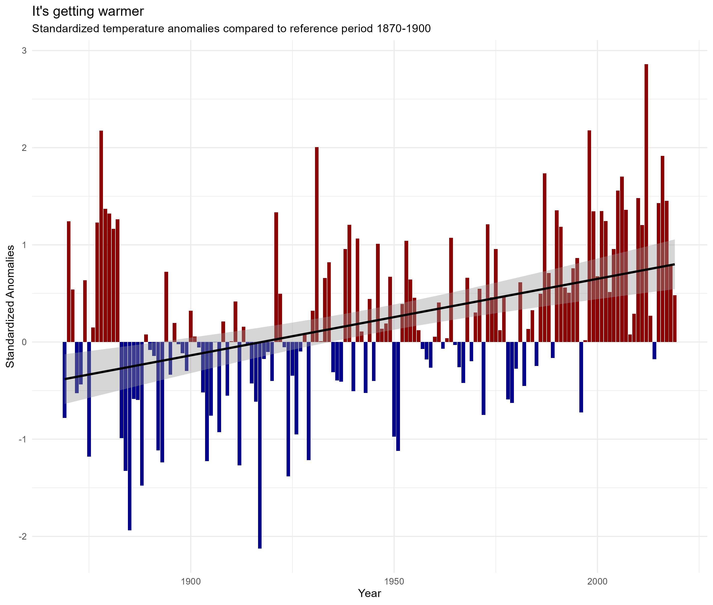

lakeid ice_on ice_off ice_duration year
1 Lake Mendota <NA> 1853-04-05 NA 1852
2 Lake Mendota 1853-12-27 <NA> NA 1853
3 Lake Mendota 1855-12-18 1856-04-14 118 1855
4 Lake Mendota 1856-12-06 1857-05-06 151 1856
5 Lake Mendota 1857-11-25 1858-03-26 121 1857
6 Lake Mendota 1858-12-08 1859-03-14 96 1858Climate Change Effects on Ice Cover and Temperature in North American Lakes
Data Description
There are two time series data sets from North American lakes since the 19th century:
- ice cover data: ice start, end and duration
- temperature data: daily air temperature since 1870
This is how the data looks like:
Ice data:
Temperature data:
sampledate year ave_air_temp_adjusted
1 1870-06-05 1870 20.0
2 1870-06-06 1870 18.3
3 1870-06-07 1870 17.5
4 1870-06-09 1870 13.3
5 1870-06-10 1870 13.9
6 1870-06-11 1870 15.0You can analyse the data separately or together to explore the effects of climate change on ice cover and temperature in North American lakes.
How to get the data
The data are part of the lterdatasampler package. You can obtain them by installing the package, loading it in your script, and then using the datasets ntl_icecover and ntl_airtemp:
install.packages("lterdatasampler")
library(lterdatasampler)
ntl_icecover
ntl_airtempIf you want to know more about the variables in the datasets, you can use the help function:
?ntl_icecover
?ntl_airtempQuestions to Explore
Here are some questions you can try to answer using the datasets:
1. How did the ice cover duration change over the years? Is there a difference between the lakes?
2. How has the average air temperature changed over the years? Can you identify any trends or patterns?
- Tip: Calculate average yearly temperature first.
3. Are there any significant temperature anomalies in the dataset? If so, when did they occur?
- Tip: You can define an anomaly relative to a reference period (1870-1900). The standardized anomalies are calculated like this:
anomaly_std = (temperature - mean(reference period)) / sd(reference period) - First, calculate the mean and standard deviation of the reference period and add them as a new column to the data (use
bind_colsto combine the two tables). Then you can easily calculate the anomalies. - See below for an example plot
4. How does the annual temperature curve change with time?
- Tip: Calculate mean monthly temperature and plot it for each year.
5. Is there a correlation between ice cover duration and temperature?
- Tip: This is a bit tricky because you need to combine the two datasets. It makes sense to correlate temperature and ice duration in one winter season (fall season of the year + spring season of the next year) with the mean temperature in that winter. Since a winter spans two years, you need to consider how to calculate average temperature in one winter. First, filter only the winter months (November to April) and change the year of the spring months to the previous year. Then calculate the mean temperature for each winter season.
Useful functions
- functions from the
lubridatepackage: to work with dates (also part of the tidyverse):year(): extract the year from a datemonth(): extract the month from a date
dplyrto summarize data and to combine tables:left_join(): to combine two tables by a common columnbind_cols(): to combine two tables by columns (just glue them together)
Example analysis
Here is an example of a plot you can try to create (from question 3):
